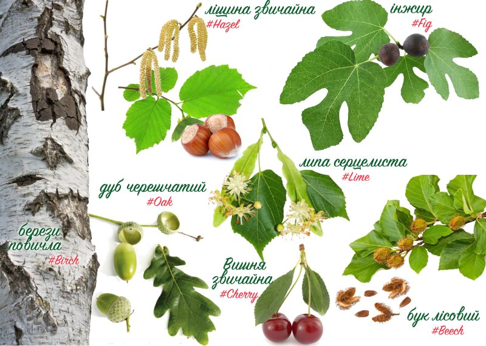

Анімація середовища
GrowApp дозволяє робити анімацію розвитку дерев, змін садів і ландшафтів, фотографуючи їх смартфоном. Додаток перетворює зображення в уповільнену зйомку, яка показує зміни в природі протягом сезонів і навіть протягом багатьох років. Ви отримуєте задоволення, роблячи анімацію вашого двору, і разом з тим допомагаєте вченим краще зрозуміти вплив змін клімату на навколишнє середовище.
Сім основних видів
Допоможи кліматологам, фотографуючи наступні 7 видів дерев:При внесенні зображення, будь ласка, дайте вірну позначку (тег) в поле Опису:
- дуб черешчатий (Quercus robur), #oak
- ліщина звичайна (Corylus avellana), #hazel
- бук лісовий (Fagus sylvatica), #beech
- берези повичла (Betula pendula), #birch
- Вишня звичайна (Prunus cerasus), #cherry
- липа серцелиста (Tilia cordata), #lime
- інжир (Ficus carica), #fig
Більше інформації
Для отримання додаткової інформації та інтерактивної карти з усіма анімація відвідайте: www.growapp.todayШколи
Школи можуть приєднатись до Фенологічної кампанії GLOBE.Розвиток
Додаток було розроблено на основі ідеї GLOBE Netherlands Foundation. Технічна розробка програми та веб-сайту зроблена Geodan i Forget the fishКонтакти
info@growapp.todayПідтримка
Додаток фінансується і підтримується консорціумом партнерів:


Attributions
- Map client software
- OpenLayers 4.0, proj4
- Map server software
- Mapproxy
- Background Map
- Openstreetmap, license
- Image processing and animation
- GraphicsMagic and GM for nodejs
- Photo browsing
- Photoswipe
- Extra map layers
- Nasa worldview
- Layout and icons
- Material Design Lite and Material Design Icons
- Native app framework
- Apache cordova and Android SDK and community camera plugin
- Database
- Postgres and PostGIS
- Custom Server
- NodeJs
- Logo
- Based on this design